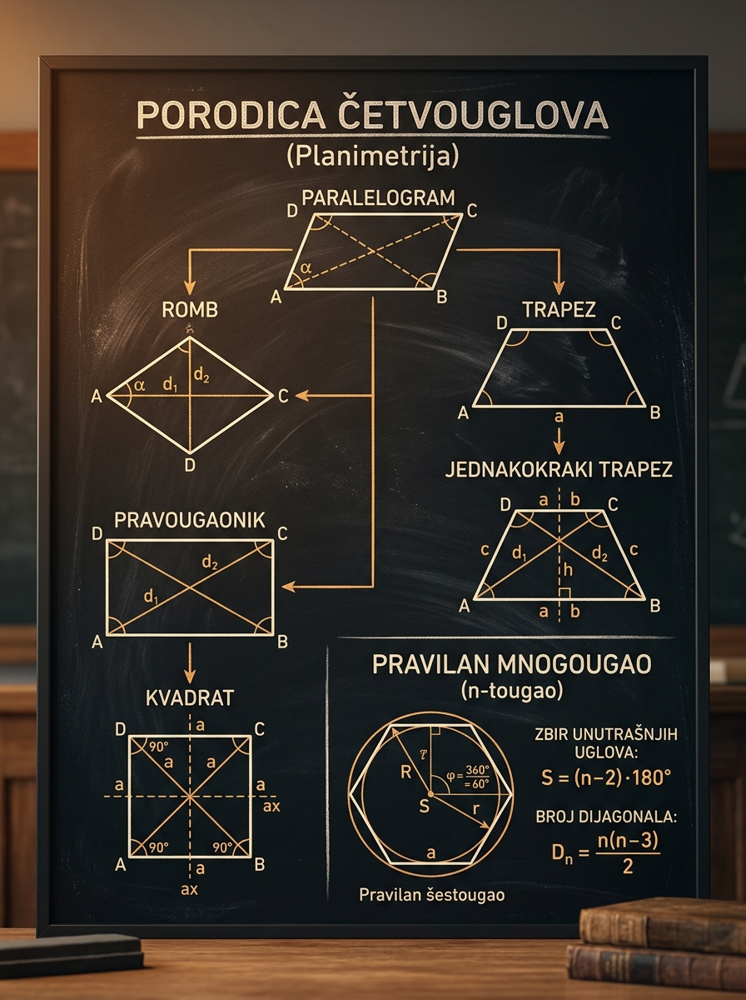

Kako da razlikuješ paralelogram, pravougaonik, romb, kvadrat i tipove trapeza, i kako da njihove osobine pretvoriš u konkretan račun.
Matoteka znanje · Lekcija 44
Četvorouglovi i mnogouglovi Planimetrija
U zadacima iz planimetrije nije dovoljno da vidiš samo „neki četvorougao". Potrebno je da odmah prepoznaš porodicu lika, znaš koje osobine dijagonala i uglova su sigurne, a koje važe samo u specijalnim slučajevima. Tada se crtež otvara: jedan trapez postaje zbir pravougaonika i trouglova, jedan romb krije dva prava trougla, a pravilan mnogougao se rastavlja na jednostavne delove.
Najčešća greška je preterano generalisanje: učenik zapamti osobinu jednog specijalnog lika pa je nesvesno koristi za celu porodicu četvorouglova.
Na ispitu se često traži baš ono što nije nacrtano direktno: dijagonala, visina, ugao između dijagonala, broj dijagonala mnogougla ili skrivena simetrija.

Zašto je ova lekcija važna
Zato što četvorougao retko ostaje samo četvorougao
U ozbiljnijim zadacima četvorougao je obično samo fasada. Iza njega stoje trouglovi, visine, dijagonale, jednakosti uglova i simetrije. Ako ne znaš koje osobine su zaista dozvoljene, lako kreneš pogrešnim putem. Ako znaš, zadatak se skraćuje i postaje pregledan.
Na prijemnom se često ne traži „nađi osobinu romba", već je tvoj posao da sam zaključiš da je dati četvorougao romb ili pravougaonik i zato aktiviraš odgovarajuću osobinu.
Jedna dijagonala često pretvori složen lik u dva trougla u kojima možeš koristiti Pitagoru, sinusnu ili kosinusnu teoremu.
Kod jednakokrakog trapeza, kvadrata i pravilnih mnogouglova simetrija ti odmah daje jednake uglove, jednake duži ili položaj centara.
Kako se ova oblast zaista pojavljuje na ispitu?
Vrlo često dobiješ mešovitu figuru: trapez sa ucrtanom dijagonalom, paralelogram sa poznatim uglom, romb kome su zadate dijagonale, ili mnogougao čiji je zbir unutrašnjih uglova poznat. Zadatak tada proverava da li umeš da prepoznaš pravu osobinu pre samog računa.
Učenikova greška obično ne nastaje u poslednjoj formuli, nego u prvom pogrešnom zaključku tipa „dijagonale su jednake" ili „krak trapeza je isto što i visina".
Minimalni algoritam za svaki zadatak
1
Prepoznaj porodicu lika
Pitaj se: da li su poznate paralelne stranice, pravi uglovi, jednake stranice ili osa simetrije?
2
Označi šta je sigurno
Upiši jednake uglove, jednake duži, sredine dijagonala, visine ili polovine dijagonala pre bilo kakvog računa.
3
Pretvori lik u jednostavnije delove
Povuci dijagonalu, spusti visinu ili razloži pravilan mnogougao na trouglove.
4
Tek tada aktiviraj formulu
Formula ima smisla tek kada znaš šta predstavljaju njeni brojevi. Bez toga je lako ubaciti pogrešnu duž.
Glavni nastavni deo
Porodica paralelograma: jedna baza, tri specijalna slučaja
Paralelogram je osnova cele ove porodice. Njegove osobine važe i za pravougaonik, romb i kvadrat. Ali svaki specijalni slučaj dodaje novu, jaču informaciju. Upravo te dodatne informacije najčešće donose rešenje.
Naspramne stranice su paralelne i jednake, a dijagonale seku jedna drugu na polovine. Za površinu ti je potrebna baza i odgovarajuća visina, ili dve stranice i ugao između njih.
Mini primer: ako su \(a=8\), \(b=5\), \(\alpha=30^\circ\), onda je \(P=8\cdot5\cdot\sin 30^\circ=20\).
Pravougaonik je paralelogram sa pravim uglom. Zato su mu dijagonale ne samo prepolovljene, nego i jednake. Dijagonala se dobija Pitagorinom teoremom.
Mini primer: stranice \(6\) i \(8\) daju dijagonalu \(10\).
Romb je paralelogram sa jednakim stranicama. Njegove dijagonale su međusobno upravne i prepolovljavaju uglove, pa se romb često rešava preko dva prava trougla.
Mini primer: ako su dijagonale \(10\) i \(24\), površina je \(120\).
Kvadrat je i pravougaonik i romb. Zato nasleđuje sve njihove osobine: jednake stranice, prave uglove, jednake i upravne dijagonale koje prepolovljavaju uglove.
Mini primer: ako je \(a=7\), dijagonala je \(7\sqrt{2}\), a površina \(49\).
Šta su „sigurne" osobine dijagonala?
U svakom paralelogramu dijagonale seku jedna drugu na polovine. To je osnovna, univerzalna osobina. Međutim, jednakost dijagonala nije univerzalna; ona važi za pravougaonik i kvadrat, ali ne mora za opšti paralelogram ili romb. Slično, upravnost dijagonala je tipična za romb i kvadrat, ali ne i za svaki paralelogram.
Kako biraš polaznu osobinu
1
Ako znaš ugao i dve stranice
Razmišljaj o površini \(ab\sin\alpha\) ili formulama za dijagonale paralelograma.
2
Ako znaš dijagonale romba
Odmah koristi da su polovine dijagonala katete pravog trougla. Tako dobijaš stranicu i obim.
3
Ako vidiš prav ugao
Proveri da li si zapravo u pravougaoniku ili kvadratu. Tada Pitagora postaje prvi alat.
Mikro-provera: ako su u paralelogramu dijagonale jednake, šta zaključuješ?
To je vrlo jak signal da je paralelogram pravougaonik. Na prijemnom je to često skriven način da se iz
opštijeg uslova pređe na specijalni slučaj sa dodatnim osobinama.
Trapezi
Kod trapeza je ključ u visini, a ne u kraku
Trapez ima samo jedan par paralelnih stranica, pa nije dovoljno da ga tretiraš kao „skoro paralelogram". Najvažnije duži su baze, visina i eventualno dijagonale. Posebno su važni jednakokraki i pravougli trapez, jer daju dodatnu strukturu koja skraćuje račun.
Baze su paralelne, kraci uglavnom nisu. Površina je \(\frac{a+b}{2}h\), pa bez visine nema direktnog puta do površine. Korisna pomoćna veličina je srednja linija \(m=\frac{a+b}{2}\).
Krakovi su jednaki, uglovi uz istu bazu su jednaki, a dijagonale su jednake. Ako spustiš visine na veću bazu, dobijaš dva podudarna prava trougla i pravougaonik u sredini.
Jedan krak je normalan na baze, pa je ujedno i visina. To često drastično pojednostavljuje račun površine i dijagonala.
Najvažniji trik kod jednakokrakog trapeza
1
Spusti visine iz krajeva manje baze
Time trapez rastavljaš na pravougaonik i dva podudarna prava trougla.
2
Nađi vodoravnu katetu
Ona nije \(a-b\), nego \(\frac{a-b}{2}\). Upravo tu učenici najčešće greše.
3
Primeni Pitagoru
Ako znaš krak i polovinu razlike baza, dobijaš visinu. Posle toga površina ide odmah.
Šta radi srednja linija trapeza?
Srednja linija povezuje sredine krakova i ima dužinu \(m=\frac{a+b}{2}\). Tada se formula za površinu može čitati vrlo intuitivno: \[ P = m \cdot h. \] To znači da je površina trapeza ista kao površina pravougaonika čija je jedna stranica srednja linija, a druga visina. Ova interpretacija pomaže da formulu pamtiš smisleno, a ne mehanički.
Mikro-provera: zašto u formulu površine trapeza ne smeš ubaciti krak umesto visine?
Zato što je površina određena rastojanjem između paralelnih baza, a to rastojanje meri se normalno na baze.
Krak je kosa duž i jednak je visini samo u posebnom slučaju pravouglog trapeza kada je krak normalan na baze.
Mnogouglovi
Više stranica, ali ista ideja: rastavi lik na trouglove
Kada broj stranica raste, najvažnija ideja ostaje ista: mnogougao razlažeš na trouglove. Iz te ideje dobijaju se i zbir unutrašnjih uglova i broj dijagonala, a kod pravilnog mnogougla i veličina centralnog ugla.
Iz jednog temena konveksnog \(n\)-ougla možeš povući \(n-3\) dijagonale i dobiti \(n-2\) trougla. Zato zbir unutrašnjih uglova nije proizvoljan, nego tačno \(n-2\) puta po \(180^\circ\).
Ako su sve stranice i svi uglovi jednaki, tada svaki unutrašnji ugao dobijaš deljenjem ukupnog zbira sa \(n\).
Iz svakog temena možeš povući \(n-3\) dijagonale, ali bi tako svaku prebrojao dvaput. Zato deliš sa \(2\).
U pravilnom mnogouglu centar je jednako udaljen od svih temena, pa se puni ugao oko centra deli na \(n\) jednakih delova.
Zašto je triangulacija toliko važna?
Mnogi učenici formule za mnogouglove doživljavaju kao odvojene činjenice. To nije dobro za prijemni. Bolje je da vidiš zajedničku ideju: iz jednog temena praviš lepezu trouglova. Tada formula \[ S_n=(n-2)\cdot 180^\circ \] postaje prirodna, a ne nešto što moraš silom da pamtiš.
Kako iz uslova dolaziš do broja stranica
1
Ako je dat zbir unutrašnjih uglova
Postavi jednačinu \((n-2)\cdot 180^\circ = S_n\) i reši po \(n\).
2
Ako je dat jedan unutrašnji ugao pravilnog mnogougla
Koristi \(\alpha=\frac{(n-2)\cdot 180^\circ}{n}\), pa pronađi \(n\).
3
Ako je tražen broj dijagonala
Kada nađeš \(n\), tek onda pređi na \(D=\frac{n(n-3)}{2}\).
Mikro-provera: pravilan mnogougao ima unutrašnji ugao \(150^\circ\). Koliko ima stranica?
Rešavaš jednačinu
\[
\frac{(n-2)\cdot 180^\circ}{n}=150^\circ.
\]
Dobijaš \(180n-360=150n\), pa je \(30n=360\), odnosno \(n=12\). Dakle, u pitanju je pravilan dvanaestougao.
Interaktivni deo
Laboratorija za dijagonale, simetrije i triangulaciju
Ovaj deo nije ukras. Pomeraj parametre i gledaj kako se menja sama geometrija: kada se dijagonale izjednače, kada postanu upravne, kako nastaje polovina razlike baza i kako se pravilan mnogougao prirodno deli na trouglove. Cilj je da oko počne da prepoznaje osobine pre nego što krene račun.
Podesi figuru
Menjaj oblik i parametre. Posmatraj šta ostaje isto, a šta se menja. To je suština razlikovanja opštih i specijalnih osobina.
Vizuelizacija
Posmatraj kako promene ugla i dužina utiču na dijagonale i površinu figure.
Dijagonale seku jedna drugu na polovine, ali ne moraju biti ni jednake ni upravne.
Površina se dobija iz proizvoda dve stranice i sinusa ugla između njih.
Kod paralelograma dve dijagonale uglavnom imaju različite dužine.
Kada se paralelogram „ispravi" u pravougaonik, dijagonale postaju jednake. Kada pređe u romb, dobijamo upravne dijagonale.
Kako da koristiš laboratoriju na pedagoški dobar način?
Nemoj samo pomerati slajdere. Posle svake promene probaj da verbalizuješ šta je ostalo isto. Na primer:
„I dalje je paralelogram, pa se dijagonale seku na polovine", ili „postao je jednakokraki trapez, zato su
dijagonale jednake". Tek kada to umeš da kažeš sopstvenim rečima, interaktivni deo zaista radi za tebe.
Vođeni primeri
Primeri koje treba razumeti, ne samo prepisati
Svaki primer je izabran da pokaže jednu glavnu ideju: rad sa uglom u paralelogramu, korišćenje dijagonala u rombu, spuštanje visine u trapezu i prevođenje uslova o uglovima mnogougla u broj stranica.
Primer 1: Paralelogram sa poznatim stranicama i uglom
Dato je: \(a=10\), \(b=6\), \(\alpha=60^\circ\). Naći površinu i dužine dijagonala.
1
Površina
Koristimo \[ P=ab\sin\alpha=10\cdot 6\cdot \sin 60^\circ=60\cdot \frac{\sqrt{3}}{2}=30\sqrt{3}. \]
2
Veća dijagonala
Za dijagonale paralelograma važi \[ d_1^2=a^2+b^2+2ab\cos\alpha. \] Zato je \[ d_1^2=100+36+120\cdot \frac12=196, \] pa je \(d_1=14\).
3
Manja dijagonala
Slično, \[ d_2^2=a^2+b^2-2ab\cos\alpha=100+36-60=76, \] pa je \[ d_2=2\sqrt{19}. \]
Primer 2: Romb zadat preko dijagonala
Dato je: \(d_1=10\), \(d_2=24\). Naći stranicu i površinu romba.
1
Iskoristi polovinu dijagonala
U rombu se dijagonale seku pod pravim uglom i na polovine. Zato su katete jednog dobijenog pravog trougla \(5\) i \(12\).
2
Nađi stranicu
Stranica romba je hipotenuza: \[ a=\sqrt{5^2+12^2}=\sqrt{169}=13. \]
3
Površina
Direktno: \[ P=\frac{d_1 d_2}{2}=\frac{10\cdot24}{2}=120. \]
Primer 3: Jednakokraki trapez i polovina razlike baza
Dato je: baze \(18\) i \(8\), krak \(13\). Naći visinu i površinu.
1
Spusti visine
Dobijamo pravougaonik i dva podudarna prava trougla. Vodoravna kateta u svakom trouglu je
\[ \frac{18-8}{2}=5. \]
2
Nađi visinu
Krak je hipotenuza, pa je \[ h=\sqrt{13^2-5^2}=\sqrt{169-25}=\sqrt{144}=12. \]
3
Izračunaj površinu
\[ P=\frac{18+8}{2}\cdot 12=13\cdot 12=156. \]
Primer 4: Mnogougao iz zbira unutrašnjih uglova
Zbir unutrašnjih uglova jednog mnogougla iznosi \(2340^\circ\). Naći broj stranica i broj dijagonala.
1
Nađi broj stranica
\[ (n-2)\cdot 180^\circ = 2340^\circ. \] Deljenjem sa \(180\) dobijamo \(n-2=13\), pa je \(n=15\).
2
Nađi broj dijagonala
\[ D=\frac{n(n-3)}{2}=\frac{15\cdot 12}{2}=90. \]
3
Tumačenje
Tek kada si sigurno našao \(n\), prelaziš na dijagonale. To je tipičan dvokoračni prijemni zadatak.
Zakoni / obrasci / ključne formule
Formula nema vrednost ako ne znaš kad sme da se upotrebi
Sledeće formule su centralne za ovu oblast. Uz svaku pamti i njenu „zonu važenja", odnosno u kom liku i pod kojim uslovom je dozvoljeno da je koristiš.
Površina preko baze i visine ili preko dve stranice i ugla između njih.
Korisno kada su poznate dve stranice i ugao. Znak plus i minus daju dve različite dijagonale.
Pitagorina teorema na trouglu određenom stranicama pravougaonika.
Važi zato što se romb deli na četiri prava trougla jednakih visina i baza po poludijagonalama.
Najkraća formula za prelaz između stranice i dijagonale kvadrata.
Srednja linija \(m\) objašnjava formulu i pomaže da je ne mešaš sa formulama za druge likove.
Broj trouglova u triangulaciji određuje zbir unutrašnjih uglova.
Svako teme daje \(n-3\) dijagonale, ali svaku prebrojavaš dvaput.
Česte greške
Ove greške oduzimaju bodove i kada je račun uredan
Greške u ovoj oblasti su uglavnom konceptualne. Račun može izgledati lepo, a da je pogrešan zato što je aktivirana osobina koja u datom liku uopšte ne mora da važi.
Pretpostaviti da su dijagonale svakog paralelograma jednake. To važi za pravougaonik i kvadrat, ne za opšti paralelogram.
U jednakokrakom trapezu uzeti vodoravnu katetu kao \(a-b\) umesto \(\frac{a-b}{2}\). Time se visina dobija pogrešno već u prvom koraku.
U formuli za površinu trapeza ubaciti krak umesto visine. Krak je kosa stranica i nije isto što i rastojanje između baza.
Pomešati zbir svih unutrašnjih uglova pravilnog mnogougla sa jednim unutrašnjim uglom. Jedno je \(S_n\), drugo je \(\alpha\).
Zaboraviti da je kvadrat istovremeno i romb i pravougaonik, pa ne iskoristiti najjaču dostupnu osobinu.
Memorisati formulu bez slike. Kada ne znaš odakle formula dolazi, mnogo je lakše ubaciti pogrešne veličine.
Veza sa prijemnim zadacima
Šta moraš da proveriš pod pritiskom vremena
Na prijemnom nije dovoljno znati osobine. Potrebna je i rutina: redosled pitanja koje sebi postavljaš čim vidiš geometrijsku sliku. Ova rutina direktno štedi vreme i smanjuje broj konceptualnih grešaka.
Pitaj se da li neka dijagonala ili visina deli figuru na trouglove koje već znaš da rešavaš.
Ako je lik specijalan, koristi najjaču osobinu tog specijalnog slučaja. Ne rešavaj kvadrat kao opšti paralelogram ako ne moraš.
Proveri da li osa simetrije odmah daje jednake uglove, jednake duži ili položaj sredine.
Na kraju proveri da li je dobijena duž realna za dati lik: da li je dijagonala kvadrata veća od stranice, da li je visina manja od kraka, da li broj dijagonala ispada ceo broj.
Petosekundni checklist pred račun
- Koji je tačno lik ili porodica lika?
- Koje osobine dijagonala su sigurne baš ovde?
- Da li mi treba visina, a ne krak?
- Mogu li figuru da razložim na trouglove?
- Da li je data veličina zbir uglova, jedan ugao ili broj dijagonala?
Kako izgleda dobar prijemni pristup
1
Brzo nacrtaj pomoćne duži
Dijagonala ili visina vrlo često „skida masku" sa zadatka.
2
Piši samo sigurne jednakosti
Nemoj dodavati osobine „po osećaju". Svaka napisana jednakost mora da ima geometrijsko opravdanje.
3
Računaj u najjednostavnijem delu figure
Ako jedan mali pravougli trougao rešava ceo zadatak, kreni od njega, ne od cele slike.
Vežbe na kraju
Kratki zadaci za proveru razumevanja
Pokušaj prvo samostalno, bez gledanja rešenja. Ako zapneš, nemoj samo otvoriti odgovor, nego probaj da otkriješ koji je prvi geometrijski uvid koji ti je falio.
Paralelogram ima stranice \(7\) i \(4\), a ugao između njih je \(30^\circ\). Nađi površinu.
Rešenje
\[
P=ab\sin\alpha=7\cdot4\cdot\sin30^\circ=28\cdot \frac12=14.
\]
Pravougaonik ima stranice \(9\) i \(12\). Nađi dužinu dijagonale.
Rešenje
\[
d=\sqrt{9^2+12^2}=\sqrt{81+144}=\sqrt{225}=15.
\]
U rombu su dijagonale \(16\) i \(30\). Nađi stranicu romba.
Rešenje
Polovine dijagonala su \(8\) i \(15\). Stranica je hipotenuza:
\[
a=\sqrt{8^2+15^2}=\sqrt{64+225}=\sqrt{289}=17.
\]
Jednakokraki trapez ima baze \(20\) i \(8\), a visinu \(9\). Nađi površinu.
Rešenje
\[
P=\frac{20+8}{2}\cdot 9=14\cdot9=126.
\]
Ovde visina već postoji, pa nema potrebe da prvo računaš krakove.
Zbir unutrašnjih uglova jednog mnogougla je \(1620^\circ\). Koliko ima stranica?
Rešenje
\[
(n-2)\cdot180^\circ=1620^\circ \Rightarrow n-2=9 \Rightarrow n=11.
\]
Mnogougao ima \(11\) stranica.
Pravilan mnogougao ima unutrašnji ugao \(150^\circ\). Koliko ima dijagonala?
Rešenje
Prvo nađemo broj stranica:
\[
\frac{(n-2)\cdot180^\circ}{n}=150^\circ \Rightarrow n=12.
\]
Zatim:
\[
D=\frac{12(12-3)}{2}=\frac{12\cdot9}{2}=54.
\]
Završni uvid
Najvažnija misaona poruka ove lekcije
Kad vidiš četvorougao ili mnogougao, nemoj odmah tražiti formulu. Prvo traži strukturu: koje stranice su paralelne, gde je simetrija, šta rade dijagonale i na koje trouglove možeš da razložiš figuru. Kada to vidiš, formula postaje samo završni alat, a ne nagađanje.
\[\text{prepoznavanje lika} \Longrightarrow \text{prava osobina} \Longrightarrow \text{jednostavniji delovi} \Longrightarrow \text{račun}\]
Završni rezime
Šta obavezno nosiš sa sobom dalje
Ako posle ove lekcije znaš sledećih nekoliko ideja bez gledanja u beleške, imaš dobar temelj za prijemne zadatke iz planimetrije.
Paralelogram je baza, a pravougaonik, romb i kvadrat su njegovi specijalni slučajevi. Trapez je posebna porodica sa jednim parom paralelnih stranica.
U paralelogramu se dijagonale prepolovljavaju, u pravougaoniku su jednake, u rombu upravne, a u jednakokrakom trapezu jednake.
Za površinu trapeza treba ti visina, a kod jednakokrakog trapeza posebno pazi na \(\frac{a-b}{2}\).
Zbir unutrašnjih uglova i broj dijagonala nisu izolovane činjenice, nego posledice rastavljanja na trouglove.
Najviše vremena se gubi kada se formula bira pre geometrijskog uvida. Obrni redosled i zadatak postaje kraći.
Logičan nastavak je lekcija o krugu i njegovim delovima, gde ćeš mnoge od ovih ideja spajati sa tetivama, tangentama i kružnim isečcima.